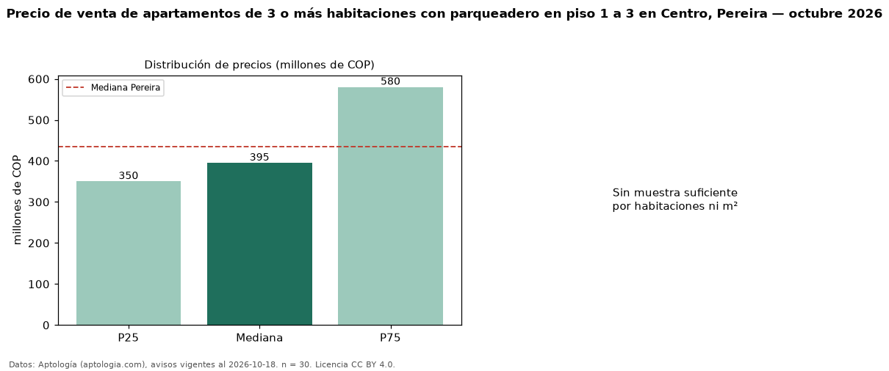

Precio de venta de apartamentos de 3 o más habitaciones con parqueadero en piso 1 a 3 en Centro, Pereira — octubre 2026
En Centro, Pereira, la mediana de precio de venta de apartamentos de 3 o más habitaciones con parqueadero en piso 1 a 3 es COP 395 millones, según 30 avisos vigentes. Eso es 12 % menos que la mediana de los apartamentos de 3 o más habitaciones con parqueadero en venta de Centro (COP 450 millones, n = 122); este segmento reúne el 25 % de esos avisos. El área mediana anunciada es 106 m². La administración mediana declarada es COP 590.000 al mes (n = 27). El estrato más frecuente es 5 (53 % de los avisos con estrato). La mediana de todos los apartamentos en venta de Pereira es COP 435 millones (−9 % de diferencia). La mitad central de los avisos va de COP 350 millones a COP 580 millones (razón 1,7), una dispersión moderada. Datos: Aptología (aptologia.com), CC BY 4.0 — https://www.aptologia.com/venta/pereira/centro. Archivos: PDF, CSV con las cifras y gráfica PNG.

| Avisos únicos | 30 |
|---|---|
| Percentil 25 | COP 350.000.000 |
| Mediana | COP 395.000.000 |
| Percentil 75 | COP 580.000.000 |
Fuente: avisos vigentes de portales inmobiliarios recopilados por Aptología, deduplicados (mínimo 30 avisos únicos por celda). Precios pedidos, no cerrados. Fecha: 2026-10-18.